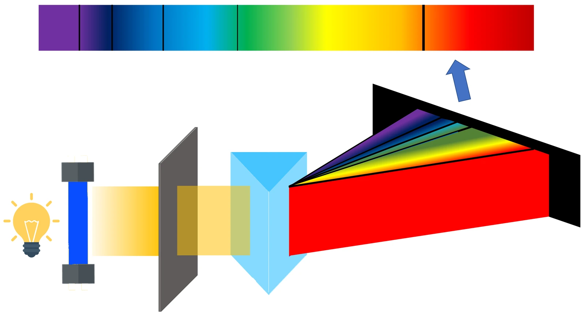

고3 전자기와 양자 · Ⅲ 양자와 미시세계 · 웹툰 17화 「별이 빛나는 이유」
실험에서 별의 표면 온도 T를 3000~30000 K로 바꾸며 연속 스펙트럼에서 가장 밝은 파장 λmax와 별의 색, 단위 면적당 복사량을 재고, 수소·헬륨·나트륨·칼슘 이온의 흡수선을 겹쳐 보았습니다. λmax × T는 언제나 약 2.898×10⁶ nm·K로 일정했고, 뜨거운 별일수록 푸르고 복사량이 T⁴로 급격히 커졌습니다. 별의 에너지원인 핵융합과 스펙트럼으로 원소를 찾는 방법을 정리합니다.
실험 데이터 되짚기
실험 안내: 별의 표면 온도 T(3000~30000 K)와 흡수선을 겹쳐 볼 원소를 고른 뒤 스펙트럼 측정하기를 누르면 λmax, λmax × T, 별의 색과 분광형, σT⁴(태양 = 1)가 기록됩니다. 온도를 3000 K부터 30000 K까지 다섯 가지 이상 바꿔 기록하면 데이터 검증 탭에서 1/T–λmax 그래프로 빈 상수를 구합니다.
| T (K) | λmax (nm) | λmax × T (×10⁶ nm·K) | 분광형 | σT⁴ (태양 = 1) | 보이는 색 |
|---|---|---|---|---|---|
| 3000 | 966 (적외선) | 2.898 | M | 0.07 | 주황빛 붉은색 |
| 4000 | 724 | 2.896 | K | 0.23 | 주황색 |
| 5500 | 527 | 2.898 | G | 0.82 | 연한 노란색 |
| 7500 | 386 | 2.895 | A | 2.85 | 흰색에 가까움 |
| 10000 | 290 (자외선) | 2.900 | B | 9.01 | 흰색 |
| 30000 | 97 (자외선) | 2.910 | O | 730 | 푸른 흰색 |
온도가 올라갈수록 λmax가 짧아지며 λmax × T ≈ 2.898×10⁶ nm·K로 일정합니다(빈 변위 법칙). 그래서 차가운 별은 붉고 뜨거운 별은 푸릅니다. 단위 면적당 복사는 σT⁴라 온도가 10배면 10,000배입니다. 흡수선의 위치는 온도와 관계없이 원소마다 정해져 있어 별 대기의 성분을 알려 줍니다.
별의 중심에서는 수소 원자핵 4개가 여러 단계를 거쳐 헬륨 원자핵 1개가 됩니다. 이때 질량이 약 0.7 % 줄고(4 × 1.00783 u → 4.00260 u, 결손 약 0.0287 u), 그만큼 E = Δmc² ≈ 26.7 MeV의 에너지가 나옵니다. 태양은 이렇게 1초에 약 4백만 톤의 질량을 에너지로 바꿉니다(광도 약 3.8×10²⁶ W ÷ c²).
별빛 스펙트럼
그림으로 보기
수소 4개 → 헬륨 1개, 사라진 질량 0.7 %가 빛이 된다
막대 길이는 실제 비율 그대로라 사라진 질량(주황)은 아주 얇습니다. 이 작은 차이가 E = Δmc²로 26.7 MeV가 되고, 태양은 이렇게 1초에 약 4백만 톤의 질량을 빛으로 바꿉니다. (원자 질량값으로 계산한 교과서 방식)
교재 그림
흡수 스펙트럼 — 기체를 지난 빛에 생기는 검은 줄

연속 스펙트럼을 내는 광원 앞에 기체를 두면 그 원소가 흡수하는 파장만 빠져 검은 줄이 생깁니다. 별의 뜨거운 표면 빛이 바깥 대기를 지날 때도 같은 일이 일어납니다.
움직여 보기
별의 표면 온도를 바꾸면 — 가장 센 파장과 색
완전한 흑체로 계산한 플랑크 곡선입니다. 3 000 K면 λmax 966 nm(적외선), 5 500 K면 527 nm, 30 000 K면 97 nm(자외선) — 곱 λmax × T는 늘 약 2.898 × 10⁶ nm·K(빈 법칙, λmax는 1 nm 간격으로 찾음). 원소 단추를 누르면 흡수선 위치가 검은 줄로 나타나는데, 온도를 바꿔도 위치는 그대로입니다. 곡선 높이는 매번 최댓값에 맞췄으니 실제 밝기는 σT⁴ 값으로 비교하세요(태양 5 772 K).
· 별의 표면을 완전한 흑체로 가정했습니다. 흡수선의 세기는 실제로 온도에 따라 크게 달라지지만(수소선은 약 10000 K 별에서 가장 진함), 여기서는 위치만 표시합니다.
· λmax는 1 nm 간격으로 스펙트럼을 훑어 찾은 측정값입니다.
흡수선: 수소 656.3·486.1·434.0·410.2 nm, 나트륨 589.0·589.6 nm, 칼슘 이온 393.4·396.8 nm · 태양 표면 약 5772 K
λmax = 2.898×10⁶ nm·K ÷ 5800 K ≈ 500 nm(초록빛 근처). 실험에서도 5800 K일 때 500 nm였습니다. 여러 색이 함께 나오므로 태양은 흰빛으로 보입니다.
질량 결손 = 4.03132 − 4.00260 = 0.02872 u(약 0.7 %). E = 0.02872 × 931.5 ≈ 26.7 MeV. 이 핵융합 에너지가 별을 빛나게 합니다.